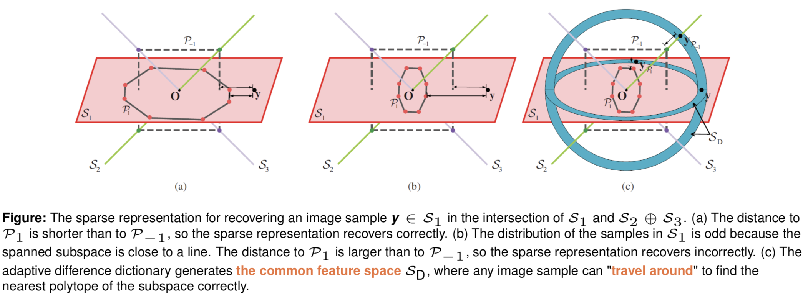
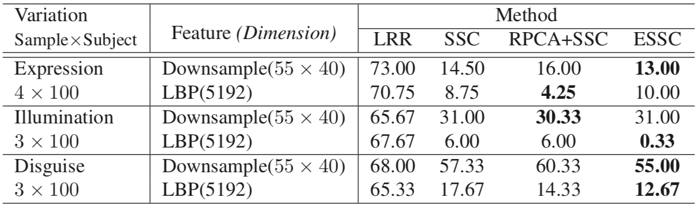
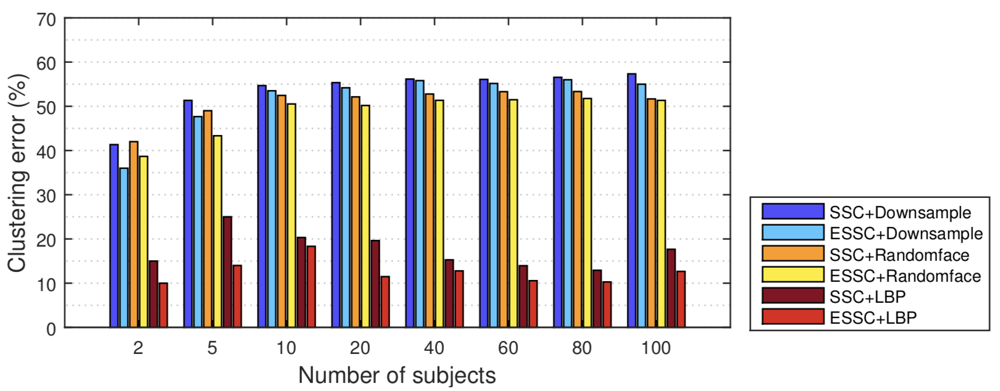

A Novel and Robust Face Clustering Method via Adaptive Difference Dictionary
Jiaxiang Ren1 Shengjie Zhao1 Kai Yang1 Brian Zhao2
1Tongji University 2SHSID
[Paper] [Slides]

Abstract
High-dimensional data are ubiquitous in most real-world research areas, such as machine learning, image processing and so on. Actually, high-dimensional data that belong to the same classes tend to gather in their own low-dimensional subspaces. Recently, many subspace recovery algorithms based on the sparse representation such as Sparse Subspace Clustering (SSC), Low-Rank Representation (LRR) and their variants are proposed to address the subspace clustering problems.
In this paper, we propose a novel clustering method based on SSC, called Enhanced Sparse Subspace Clustering (ESSC), to deal with complicated face images under variant expressions, illuminations or disguises. Assuming that the variant expressions or disguises of the face images are sharable, we introduce the adaptive difference dictionary to extend the simple linear combination of face images in SSC with the combination of the specific features and the common features. Thus both of the accuracy and generalization of clustering are improved simultaneously.The experimental results on the AR face databases show that the proposed ESSC not only makes up to 9.0% improvements on accuracy compared with SSC, but also is more robust and scalable for dealing with larger face clustering problems (up to 400 samples from 100 subjects) under variant expressions, disguises or illuminations.
Geometric Interpretation

Clustering Variant Face Images

Clustering Scalability

Citation
If you find this useful for your research, please use the following Bibtex.
@inproceedings{Ren2017essc,
title={A novel and robust face clustering method via adaptive difference dictionary},
author={Jiaxiang Ren and Shengjie Zhao and Kai Yang and Brian Nlong Zhao},
booktitle={IEEE International Conference on Multimedia & Expo Workshops (ICMEW)},
pages={627-632},
year={2017},
}